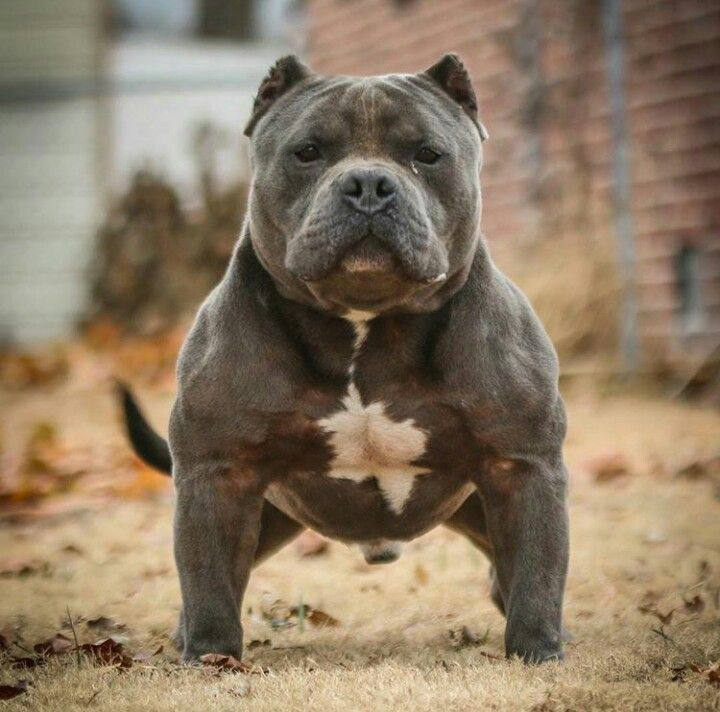

Американский булли

Происхождение: США
Размер: Средние (рост: 43–51 см, вес: 30–58 кг)
Характер: Уверенные, дружелюбные, преданные, любят детей
Особенности: Мускулистое телосложение, широкая грудь. Короткая шерсть, почти не линяет. Требуют социализации, но не агрессивны
Здоровье: Дисплазия суставов, кожные аллергии